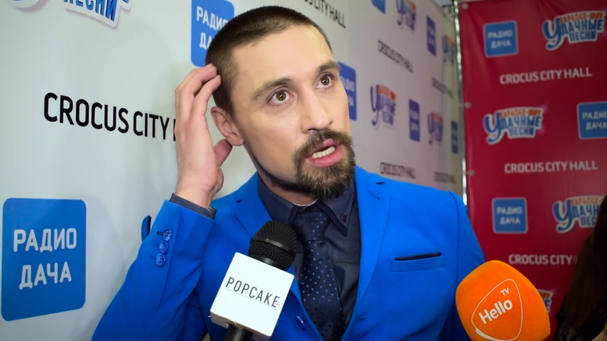
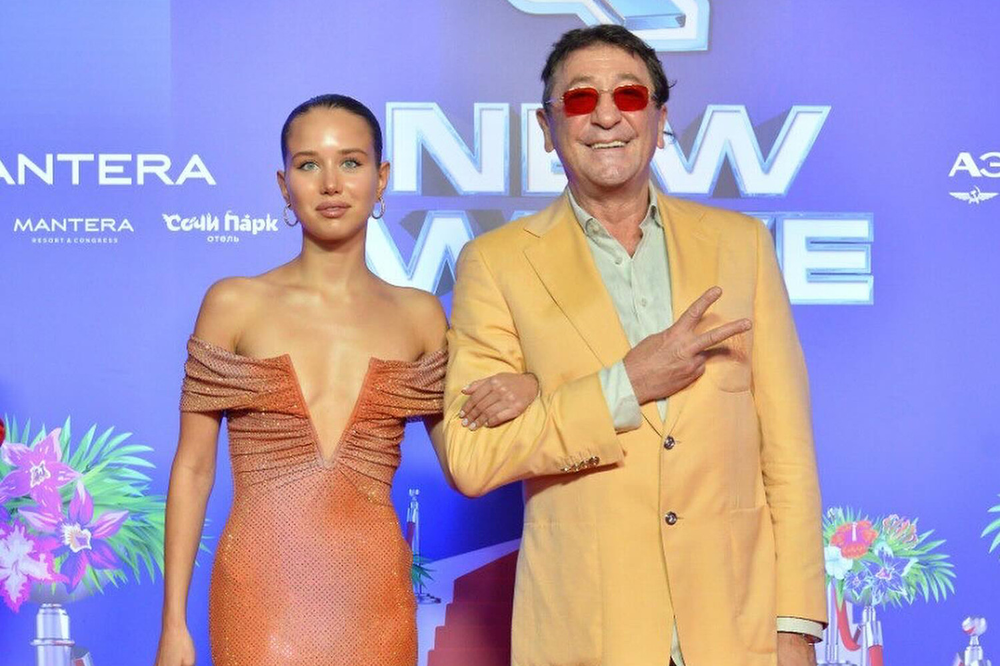
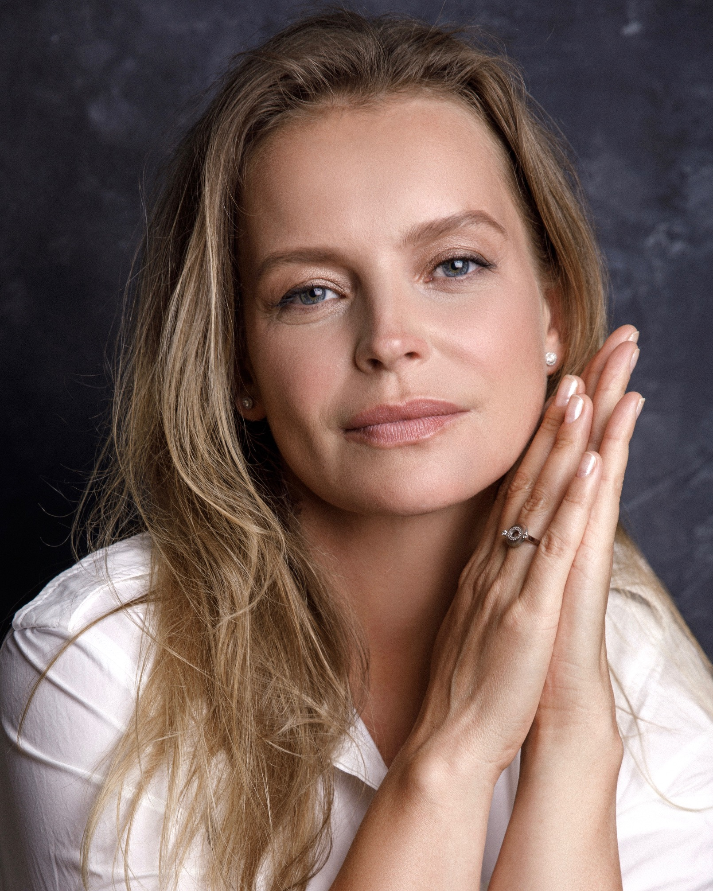
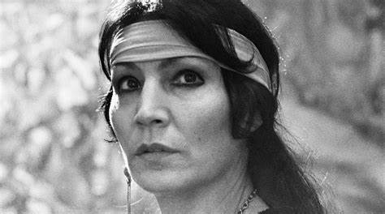

6 июня 2025
Автор: Максим Кулаков
68
37

В 2022 году Дима Билан столкнулся с серьезными проблемами со здоровьем. Тогда певец не раскрывал подробности состояния, чем спровоцировал множество самых страшных предположений.
Раскрывать точный диагноз артист не стал и сейчас, но признался, что речь шла о предраковом заболевании. А вот слухи о других болезнях Дима опроверг.
«Ну, во-первых, никаких у меня ВИЧ нет, извините. Об этом тоже много писали. Опять же, кишки все доставать не буду. Я абсолютно здоровый человек. Единственное — после перелома у меня система сосудов немножко на левой ноге, поехала, синяя коленка. А в остальном — прям все, слава богу, хорошо», — поделился Билан в интервью Надежде Стрелец.
4 июня 2025
Автор: Назар Лаврищев
20
24

В 4-м выпуске шоу «Мастер игры» неожиданно произошел конфликт между Филиппом Киркоровым и юной невестой Григория Лепса. Девушка до сих пор не может отпустить ситуацию.
Филипп Киркоров появился в шоу «Мастер игры» и сразу же разругался с 19-летней Авророй Кибой. Он усомнился в том, что девушка вообще что-то из себя представляет.
«Я хотел бы для себя понять — вы сюда пришли для чего? Тут собрались спортсмены, актеры, экстрасенсы — люди, которые сделали себя сами. А ты кто? Ты же понимаешь, что как личность не существуешь. Просто девушка кого-то», — обратился он к невесте Лепса.
30 мая 2025
Автор: Марианна Бабик
50
3

Она росла в семье художников и всерьез планировала продолжить династию, пока не попала в драмкружок. Случайно Анна Табанина получила и приглашение на кастинг в сериал «Бедная Настя», который с блеском прошла. Но периодически артистка исчезала с экрана…
В ранние годы Анна Табанина мало годилась для актерской профессии, будучи очень стеснительной. Девочка не ходила в детский сад и росла домашним ребенком: чаще всего с ней сидела бабушка Анна Алексеевна. Владимир Табанин давал дочке уроки живописи, ну а с 11 лет Аня еще и ездила на конюшню в Шушары, где занималась конкуром и ухаживала за лошадьми.
Табанина с уверенностью говорила родителям, что станет художницей. С математикой у девочки не ладилось, так что в 10-й класс она не пошла. Целый год Аня моталась из Пушкина в центр Петербурга на курсы, затем сдала экзамены на пятерки, однако из-за разногласий отца с ректором художественного училища так и не поступила. Разумеется, девушка расстроилась, но со временем поняла: что ни делается — к лучшему.
22 мая 2025
Автор: Юлия Бакум
67
39

Простой поход в магазин закончился для 65-летней Джуны госпитализацией: женщина потеряла сознание прямо на улице. Ясновидящую быстро прооперировали, но ее состояние продолжало ухудшаться на глазах.
8 июня 2015 года целительница скончалась от инсульта в московской больнице. Проститься с экстрасенсом на Ваганьковское кладбище приехали 250 человек, многие из которых считали Джуну своей спасительницей. Очевидцы досконально помнят, как проходили те похороны: как и все, что связано с именем женщины, церемония не обошлась без мистики.